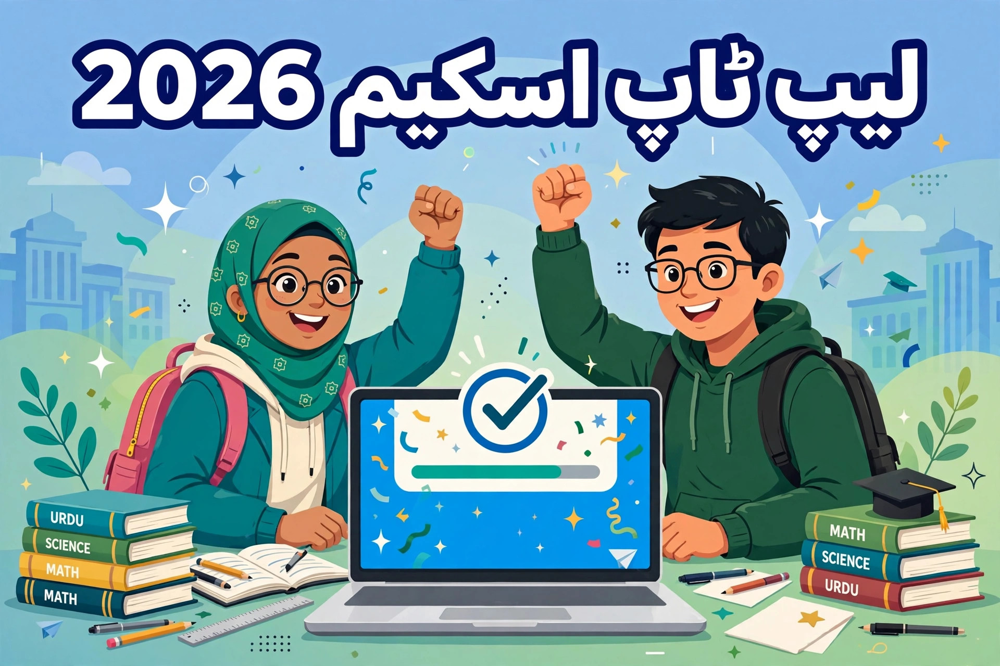

وزیراعلیٰ پنجاب لیپ ٹاپ اسکیم 2026: اہلیت، اپلائی اور میرٹ لسٹ کا مکمل طریقہ

پنجاب کے ہزاروں طلبہ کا سوال ہر سال ایک ہی ہوتا ہے: "سرکاری فری لیپ ٹاپ اسکیم میں اپلائی کیسے کریں؟" وزیراعلیٰ پنجاب کی لیپ ٹاپ اسکیم کے تحت پہلے فیز میں 40 ہزار سے زائد طلبہ کو جدید لیپ ٹاپ دیے گئے، اور اب دوسرے فیز میں لاکھوں درخواستیں موصول ہو رہی ہیں۔ اگر آپ پنجاب کے کالج یا یونیورسٹی میں پڑھتے ہیں تو یہ اسکیم آپ کے لیے سنہری موقع ہے — بشرطیکہ آپ اہلیت کی شرائط پوری کرتے ہوں۔ آئیے مکمل تفصیل سمجھتے ہیں۔
اسکیم کیا ہے اور لیپ ٹاپ کیسے ملتے ہیں؟
یہ اسکیم پنجاب حکومت کے محکمہ ہائر ایجوکیشن (HED) کے تحت چلتی ہے، جس کا مقصد میریٹ کی بنیاد پر مستحق اور لائق طلبہ کو جدید لیپ ٹاپ (Core i7، 13ویں جنریشن) فراہم کرنا ہے، تاکہ وہ آن لائن لیکچرز، اسائنمنٹس، ریسرچ اور فری لانسنگ میں دنیا بھر کے طلبہ کے ساتھ برابر مقابلہ کر سکیں۔ تقسیم خالصتاً میرٹ اور نادرا کی تصدیق پر ہوتی ہے — نہ سفارش چلتی ہے، نہ کوئی فیس مانگی جاتی ہے۔
اہلیت کی شرائط
درخواست دینے سے پہلے یہ شرائط خود پر چیک کریں — ایک بھی شرط پوری نہ ہوئی تو درخواست مسترد ہو جائے گی:
- پنجاب کا ڈومیسائل: طالب علم کے پاس پنجاب کے کسی بھی ضلع کا ڈومیسائل ہونا لازمی ہے۔
- داخلہ: کسی سرکاری یونیورسٹی یا کالج کے BS پروگرام کے پہلے یا دوسرے سمسٹر میں داخلہ ہونا چاہیے۔ سرکاری میڈیکل اور ڈینٹل کالجز کے فرسٹ پروفیشنل (2025 اور بعد کے سیشن) اور سرکاری نرسنگ کالجز کے BS نرسنگ کے طلبہ بھی اہل ہیں۔
- نمبرات: سرکاری یونیورسٹی/کالج کے لیے انٹرمیڈیٹ میں کم از کم 65 فیصد نمبر؛ میڈیکل/ڈینٹل کے لیے 80 فیصد؛ DVM کے لیے 75 فیصد؛ نرسنگ کے لیے 65 فیصد۔
- درست CNIC یا بی فارم: شناختی کارڈ یا بی فارم کا نمبر درج کرنا ہوگا۔
- پہلے لیپ ٹاپ نہ ملا ہو: جو طالب علم پہلے کسی وزیراعظم یا وزیراعلیٰ لیپ ٹاپ اسکیم میں لیپ ٹاپ لے چکا ہے، وہ دوبارہ اہل نہیں۔
- خصوصی کوٹہ: معذور طلبہ اور طالبات کے لیے مخصوص کوٹہ رکھا گیا ہے۔
دوسرے فیز میں منتخب پرائیویٹ یونیورسٹیوں کے طلبہ کو بھی پہلی بار شامل کیا گیا ہے — اپنے ادارے کی فہرست سرکاری پورٹل پر چیک کریں۔
درکار کاغذات
آن لائن فارم پُر کرنے سے پہلے یہ چیزیں تیار رکھیں:
- CNIC یا بی فارم: اسکین شدہ کاپی یا واضح تصویر۔
- تازہ تصویر: پاسپورٹ سائز کی حالیہ تصویر۔
- تعلیمی دستاویزات: انٹرمیڈیٹ کی مارکس شیٹ یا ٹرانسکرپٹ۔
- داخلے کا ثبوت: یونیورسٹی/کالج کا کارڈ یا داخلے کا سرٹیفکیٹ۔
- موبائل نمبر اور ای میل: فعال نمبر اور ای میل — تصدیقی کوڈ اور اپڈیٹس اسی پر آئیں گے۔
قدم بہ قدم آن لائن اپلائی کا طریقہ
پورا عمل گھر بیٹھے آن لائن ہوتا ہے — کسی دفتر جانے کی ضرورت نہیں۔ سرکاری پورٹل: cmlaptophed.punjab.gov.pk
مرحلہ 1 — اکاؤنٹ بنائیں: پورٹل کھول کر "Register Now" دبائیں۔ اپنا CNIC یا بی فارم نمبر، ای میل اور موبائل نمبر درج کریں اور پاس ورڈ بنائیں۔ موصولہ کوڈ سے نمبر/ای میل کی تصدیق کریں۔
مرحلہ 2 — فارم پُر کریں: ذاتی معلومات (نام، پتہ، تعلیمی پس منظر) اور تعلیمی تفصیل (نمبرات، ادارے کا نام) درست درج کریں۔
مرحلہ 3 — کاغذات اپ لوڈ کریں: CNIC/بی فارم، تصویر، مارکس شیٹ اور داخلے کے ثبوت کی صاف اسکین کاپیاں اپ لوڈ کریں۔
مرحلہ 4 — جائزہ اور جمع: فارم جمع کرنے سے پہلے ہر خانہ دوبارہ پڑھیں — غلط یا نامکمل معلومات پر درخواست مسترد ہو جاتی ہے۔ جمع کرنے کے بعد ٹریکنگ نمبر نوٹ کر لیں اور وقتاً فوقتاً پورٹل پر لاگ اِن کر کے اسٹیٹس چیک کرتے رہیں۔
میرٹ لسٹ میں اپنا نام کیسے چیک کریں؟
درخواستیں بند ہونے کے بعد میرٹ لسٹ سرکاری پورٹل پر اپ لوڈ ہوتی ہے۔ اپنا اسٹیٹس اس طرح چیک کریں:
- پورٹل کھول کر "Search Merit List" کے ٹیب پر جائیں۔
- اپنی یونیورسٹی اور ڈیپارٹمنٹ منتخب کریں۔
- بغیر ڈیش کے اپنا CNIC نمبر درج کریں۔
- سسٹم تین میں سے ایک اسٹیٹس دکھائے گا: Selected (نام منتخب، جمع کرنے کا SMS آئے گا)، Recommended (معیار پر پورا مگر ویٹنگ لسٹ پر)، یا Rejected (ریکارڈ میرٹ سے میل نہیں کھایا)۔
اگر اسٹیٹس پر اعتراض ہو تو پورٹل پر گریوینس (شکایت) کا فیز بھی کھلتا ہے — وہاں اپنی شکایت درج کرا سکتے ہیں۔
عام غلطیاں جن سے بچیں
- غیر سرکاری سائٹ پر اپلائی: ہم نام والی جعلی سائٹوں پر CNIC اپ لوڈ نہ کریں — ہمیشہ سرکاری پورٹل کی تصدیق کریں۔
- غلط نمبرات یا ریکارڈ: جو معلومات یونیورسٹی کے ریکارڈ سے میل نہیں کھاتیں، درخواست مسترد کر دی جاتی ہے۔
- آخری تاریخ کا انتظار: آخری دنوں میں پورٹل پر رش ہوتا ہے — وقت ختم ہونے سے پہلے فارم مکمل کر لیں۔
- کسی کو فیس دینا: یہ اسکیم مکمل مفت ہے۔ فیس مانگنے والا جعلی ہے۔
- ٹریکنگ نمبر کھونا: اسے سنبھال رکھیں — اسٹیٹس چیک کرنے کے لیے یہی آپ کی شناخت ہے۔
خلاصہ
وزیراعلیٰ پنجاب لیپ ٹاپ اسکیم میں کامیابی کا فارمولا سادہ ہے: پنجاب کا ڈومیسائل، متعلقہ سمسٹر میں داخلہ، مطلوبہ نمبرات، درست کاغذات اور سرکاری پورٹل پر بروقت درست درخواست۔ اگر آپ اہل ہیں تو دیر نہ کریں — ایک مفت جدید لیپ ٹاپ آپ کی تعلیم اور فری لانسنگ کیریئر دونوں کے لیے بہترین سرمایہ کاری ہے۔ نئے فیز کی تازہ ترین اپڈیٹس کے لیے وقتاً فوقتاً یہی صفحہ دیکھتے رہیں۔